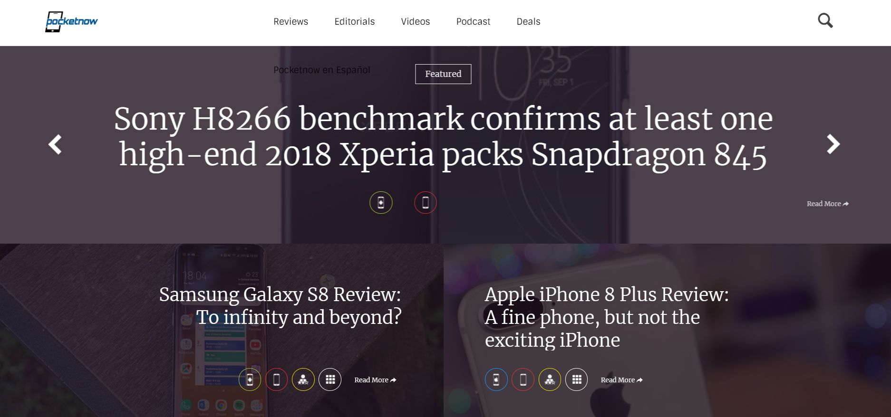
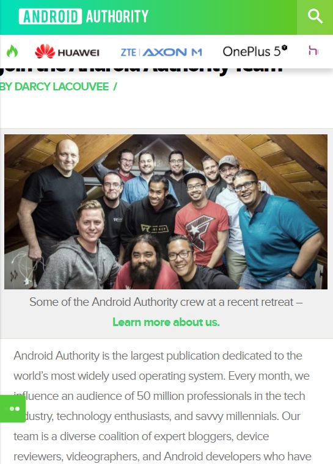
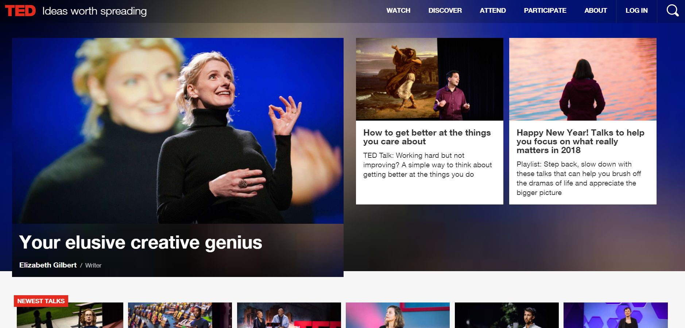
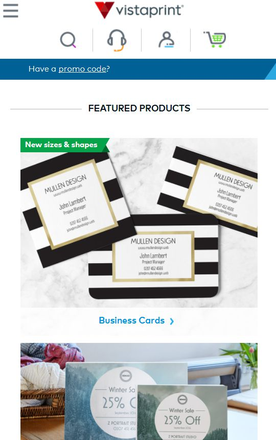
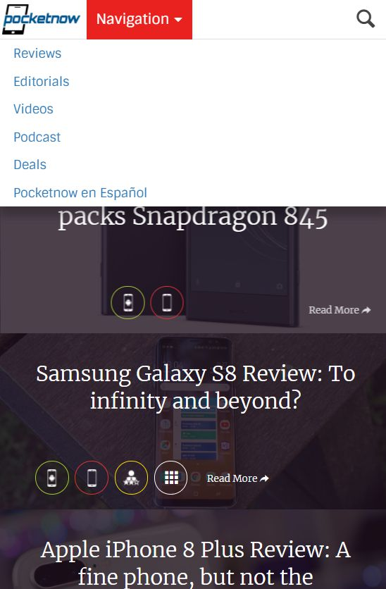
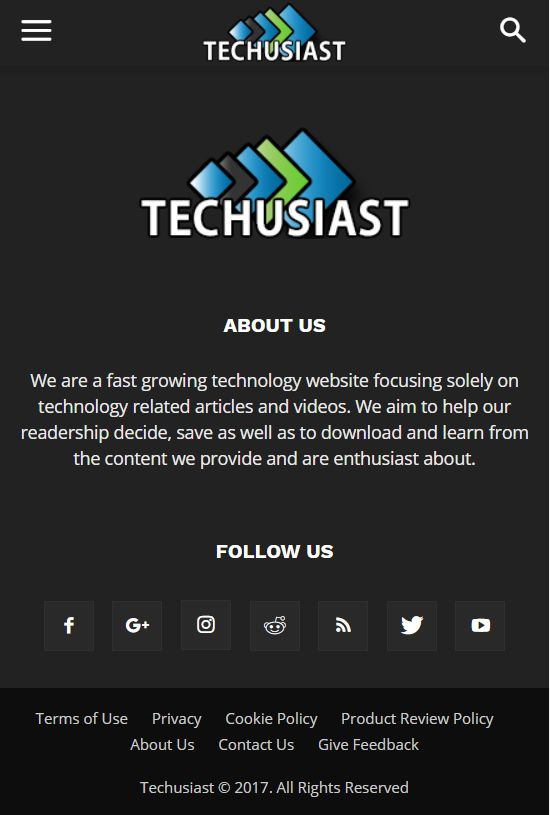
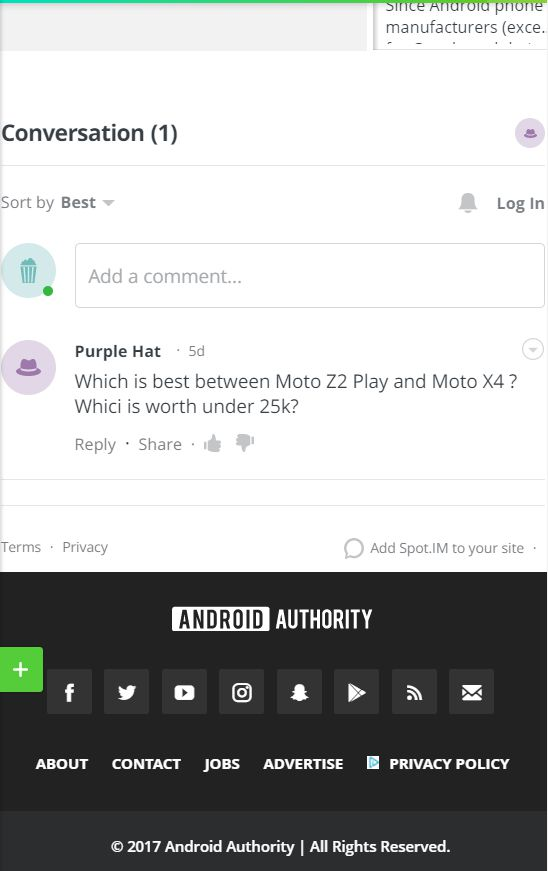
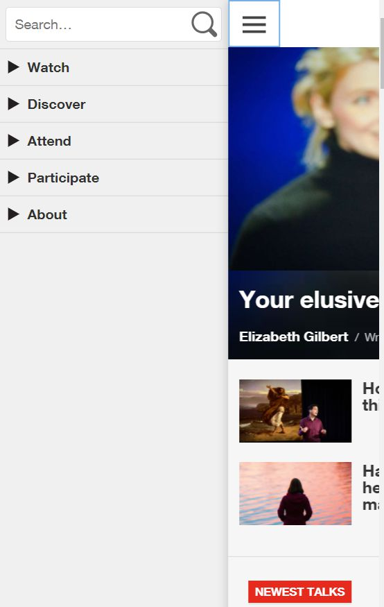
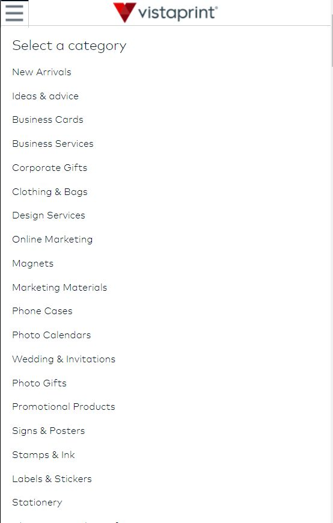

Models of Good Practice (MGP) and User Interface (UI)
For my designs, I have used a large number of websites to use as inspiration and to enhance the User Interface. My chosen websites were researched in detail to make sure that my website uses the best practices to make it comfortable, understandable and as efficient as possible.
I have worked with Bartek and Dima to research these best practices and the websites to ensure that it meets with the currently used business standards.
The logo is placed on the top of my website, however I wanted to make it a little unusual and place it on the top left, while giving just enough space for a hamburger menu on the right side. The end result has proved it to look good as well as easy to use and notice.
I wanted a mobile menu that was easy to use and make it a great looking feature. “VistaPrint” offers a similar mobile menu to the one I have used for my website, however it lacks of a few ‘fancy’ animations, which in my opinion are important to increase the user experience by quite a bit.
The main content area for my website was inspired by “Techusiast” yet again. I believe that a simple full-screen section divided up into sections can look really good with some CSS tweaks. (Techusiast - About - used for the landing page to showcase the team members)
The rest of the pages on my website look nearly identical. I did this to keep it consistent and to make sure that anyone who visits my website, would take no longer than a couple of seconds to realise and understand the overall layout of the website. This has also helped me to keep the overall layout and design simple and clear.
The footer was mainly inspired by “Techusiast” and “AndroidAuthority”. We believed that the design and the simplicity were key factors to make the area good looking and easily understandable as well as user friendly.
Websites used as inspiration:
- Pocketnow - mobile and desktop 
- Techusiast - mobile and about pages
- Android Authority - mobile and footer 
- Ted - mobile and desktop 
- Vistaprint - mobile and navigation 





